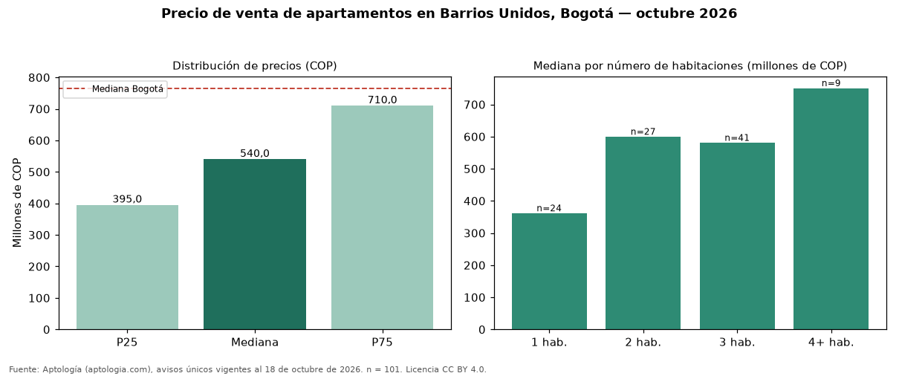

Precio de venta de apartamentos en Barrios Unidos, Bogotá — octubre 2026
COP 540 millones es el precio mediano de apartamentos en venta en Barrios Unidos, Bogotá (n = 101 avisos únicos). Frente al total de Bogotá (COP 765 millones), el barrio está 29 % por debajo. El área mediana anunciada es 76 m² (en Bogotá: 102 m²). Por metro cuadrado, la mediana es COP 8.181.818/m² (+10 % frente a COP 7.407.407/m² en Bogotá), puesto 54 de 166 barrios con muestra suficiente. Cruzando con la oferta de arriendo del mismo barrio, la rentabilidad bruta implícita es de 8,1 % anual (canon por m² × 12 / precio por m²). El segmento con más oferta es el de 3 habitaciones (41 avisos, mediana COP 580 millones); pasar de 2 habitaciones a 3 habitaciones sube la mediana -3 %. El estrato más frecuente en los avisos es 3. Datos abiertos CC BY 4.0 de Aptología; fuente y búsqueda de inmuebles: https://www.aptologia.com/venta/bogota/barrios-unidos. Archivos: PDF de 2 páginas, CSV con las cifras y gráfica PNG.

| Avisos únicos | 101 |
|---|---|
| Percentil 25 | COP 395.000.000 |
| Mediana | COP 540.000.000 |
| Percentil 75 | COP 710.000.001 |
| Mediana por m² | COP 8.181.818 |
Fuente: avisos vigentes de portales inmobiliarios recopilados por Aptología, deduplicados (mínimo 30 avisos únicos por celda). Precios pedidos, no cerrados. Fecha: 2026-10-18.